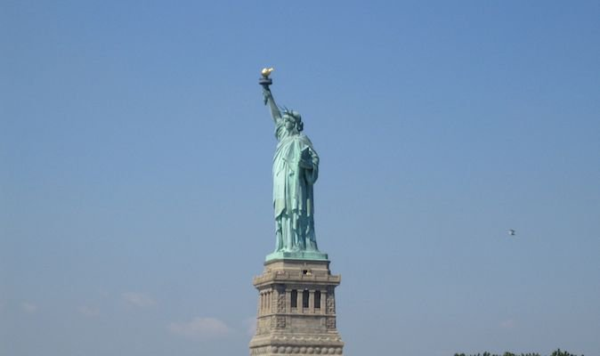
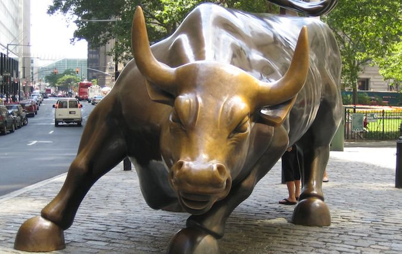
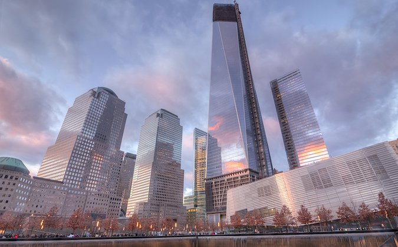
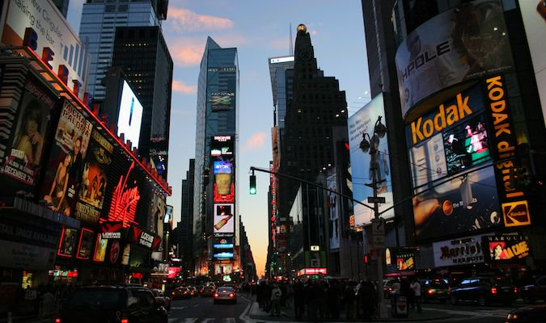
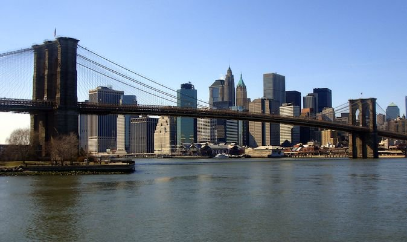

Places to visit in New York
New York, the largest city in the U.S., is an architectural marvel with plenty of historic monuments, magnificent buildings and countless dazzling skyscrapers. Besides the architectural delights, New York is an urban jungle that has everything to offer to visitors. The city is home to numerous museums, parks, trendy neighborhoods and shopping streets.
Statue of Liberty
Though the line for the ferry from Battery Park is long, if you get there early, you can avoid most of it. The Statue of Liberty is spectacular to see up close, but the real highlight of this combo is Ellis Island, where you can learn about the immigrant experience and get a sense of the people who helped build NYC. There's such a great sense of history there that you can't help but to be impressed.
Wall street
Take a photo with the famous bull and then walk to Wall Street and see where all those bankers destroyed the economy. There's heavy security in the area, but you can sit and watch people whiz in and out of buildings on their way to cause some other financial disaster.
World Trade Centre
The recently opened "Freedom Tower" gives you a panoramic view of the city, and there is also a lot of information about the 9/11 terrorist attacks. On the elevator up, you can also see images of the historical development of NYC. At the bottom of the tower is a park commemorating the victims of the attacks along with an extensive museum. The museum houses moving exhibits about the significance of 9/11. For an additional fee, there are guided tours.
Times Square
No matter when you go to Times Square, it will be packed with people. There are pedestrian areas where you can sit and hang out. If you aren't shopping or eating or seeing a show, there isn't much to do in the area, but it's still a fabulous place to people-watch for a few minutes from the top of the red steps of the TKTS kiosk.
Brooklyn Bridge
The Brooklyn Bridge offers an easy 25-minute walk into Brooklyn and the waterfront park on the other side. Stopping to take photos and meandering along the way will make the walk about 40 minutes. You get a lot of wonderful views of downtown as you make your way across. I enjoy doing this walk at night, when downtown Manhattan is all lit up.